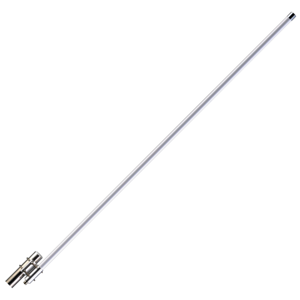
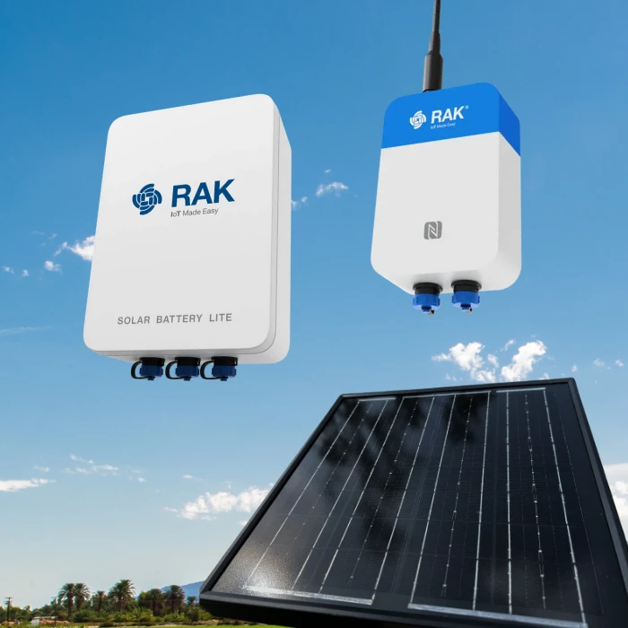
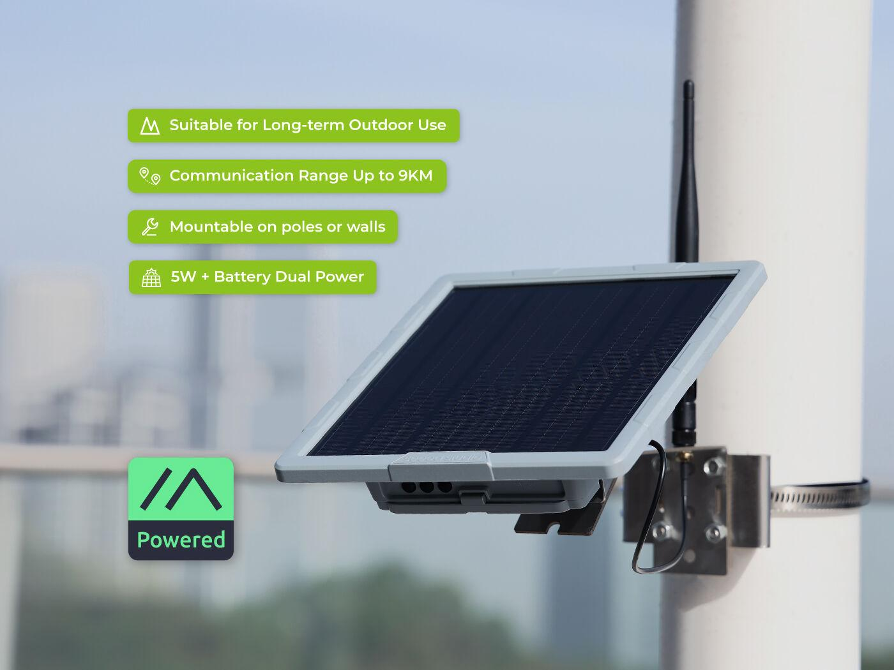
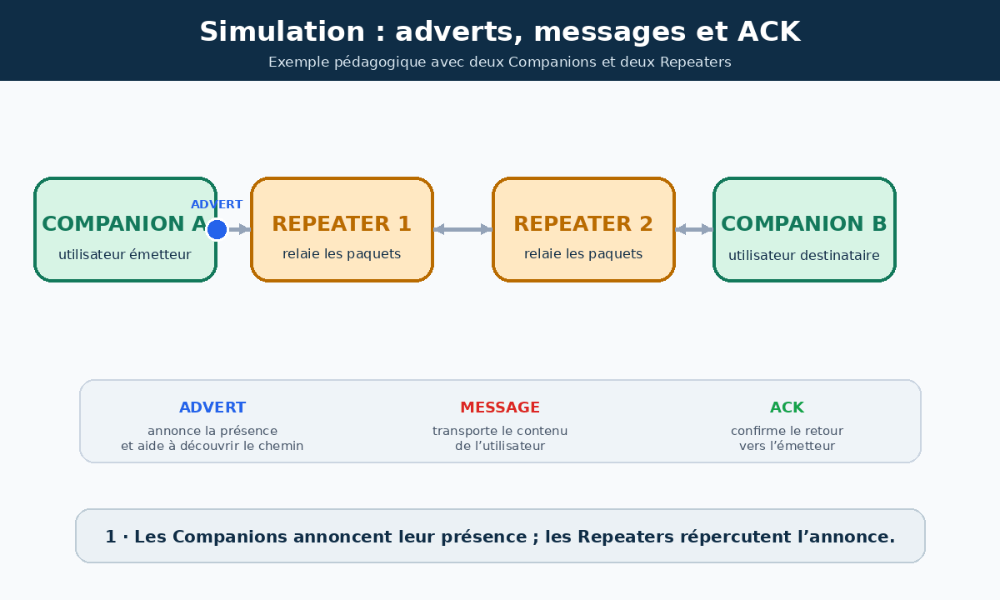

Galerie photo et illustrations
Une sélection de visuels pour découvrir les appareils, les antennes, les installations sur points hauts et le fonctionnement d’un réseau MeshCore.
Galerie administrée : cette galerie est alimentée et modérée uniquement par les administrateurs du Projet d’Interconnexion Normand. Seuls les visuels validés et publiés par l’équipe apparaissent ici. Pour une question ou une correction, utilisez le formulaire de contact ou le Discord officiel ou l’adresse projet.interconnection.normand@gmail.com.









